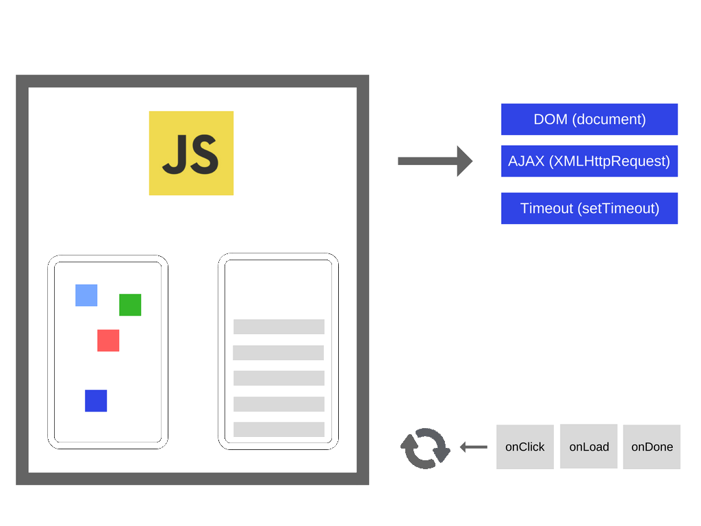
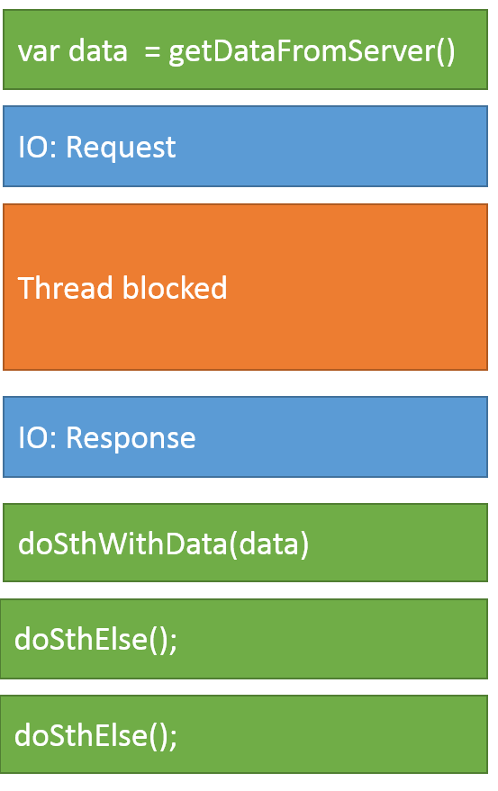

JavaScript is a single threaded, concurrent, non-blocking and asynchronous programming language
The JavaScript engine runs inside an execution
environment
such as the Browser or Node.js
This environment exposes many APIs to the JavaScript engine, such as the DOM or XMLHttpRequest (browser) or the Timers (both)

JavaScript has a concurrency model based on an event loop
 This model is quite different from models in other languages like C and Java
Browser APIs expose operations that can run
concurrently
using a small number of threads
const elem = document.querySelector("#app");
let counter = 0;
// to be called every 1s
function timerCallback() {
counter++;
elem.innerHTML = `Counter: ${counter}`;
}
setInterval(timerCallback, 1000);
Such operations result in a
callback function
to be executed by the
JavaScript runtime
When the Call Stack is empty, the Event Loop takes the first callback from the Event Queue and places it at the top of the Call Stack for execution

console.log('start');
setTimeout(function() {
console.log('setTimeout');
}, 0);
console.log('end');
// start, end, setTimeout
Each iteration of the event loop is called a tick
Browsers rendering engine executes
in the same thread
as the JavaScript
runtime
Rendering events have higher priority for
execution
and will be fetched from the queue
first
// what happens if we run this?
while (true) {}
The event loop will not fetch anything from the
queue
if the call stack is not empty
A function is called a Callback when it is passed as an argument to another function for later execution
Callbacks can be invoked synchronously or asynchronously:
// synchronous callback
function isOdd(num) {
return num % 2;
}
const numbers = [1, 5, 8, 19, 232, 456];
const oddNumbers = numbers.filter(isOdd);
All isOdd callback invocations end
// asynchronous callback
function ring() {
console.log('RING!');
}
setInterval(ring, 1000);
The invoking setInterval function ends
before the ring callback is
invoked
To handle I/O operations, two different API models exists:
function doSthWithData(data) { ... }
const data = getDataFromServer();
doSthWithData(data);
doSthElse();
doSthElse();

function doSthWithData(data) { ... }
getDataFromServer(doSthWithData);
doSthElse();
doSthElse();